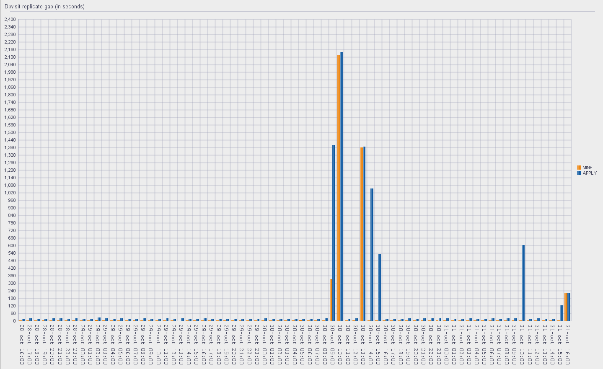

This was first published on https://www.dbi-services.com/blog/dbvisit-replicate-sql-developer-chart/ (2017-10-31)
Republishing here for new followers. The content is related to the versions available at the publication date.
. 
Here is a quick SQL Developer report which display a chart about the Dbvisit replicate lag over the last hours
The idea is to have the following chart showing the lag in MINE and APPLY processes. Here is an example where I stopped the replication to show some lag.
The query is on the DBVREP.DBRSCOMMON_LAG_STATS on the APPLY side, which display the wallclock time with timestamp from the MINE and from the APPLY.
Here is the SQL Developer report .xml:
<?xml version="1.0" encoding="UTF-8" ?>
<displays>
<display id="72f37b59-015f-1000-8002-0af7a3b47766" type="" style="Chart" enable="true">
<name><![CDATA[Dbvisit replicate gap]]></name>
<description><![CDATA[]]></description>
<tooltip><![CDATA[]]></tooltip>
<drillclass><![CDATA[]]></drillclass>
<CustomValues>
<Y1AXIS_TITLE_TEXT><![CDATA[min]]></Y1AXIS_TITLE_TEXT>
<PLOT_DATATIPS_TEXT><![CDATA[true]]></PLOT_DATATIPS_TEXT>
<Y2AXIS_SCALE_MAXIMUM><![CDATA[80.0]]></Y2AXIS_SCALE_MAXIMUM>
<XAXIS_TICK_LABEL_FONT.COLOR><![CDATA[-12565927]]></XAXIS_TICK_LABEL_FONT.COLOR>
<LEGEND_LOCATION><![CDATA[AUTOMATIC]]></LEGEND_LOCATION>
<PLOT_SERIES_OPTIONS_COLOR><![CDATA[\,-1344256,-16756836,-10066279,-16751002,-26368]]></PLOT_SERIES_OPTIONS_COLOR>
<DATA_MAP_COLUMNS><![CDATA[\,"WALLCLOCK","WALLCLOCK"]]></DATA_MAP_COLUMNS>
<Y1AXIS_SCALE_MAXIMUM><![CDATA[60.0]]></Y1AXIS_SCALE_MAXIMUM>
<Y1AXIS_SCALE_INCREMENT_AUTOMATIC><![CDATA[false]]></Y1AXIS_SCALE_INCREMENT_AUTOMATIC>
<XAXIS_TICK_LABEL_ROTATE><![CDATA[HORIZONTAL]]></XAXIS_TICK_LABEL_ROTATE>
<TYPE><![CDATA[BAR_VERT_CLUST]]></TYPE>
<DATA_MAP_COUNT><![CDATA[2]]></DATA_MAP_COUNT>
<STYLE><![CDATA[Default]]></STYLE>
<TITLE_ALIGNMENT><![CDATA[LEFT]]></TITLE_ALIGNMENT>
<XAXIS_TICK_LABEL_FONT.NAME><![CDATA[Courier New]]></XAXIS_TICK_LABEL_FONT.NAME>
<TITLE_TEXT><![CDATA[Dbvisit replicate gap (in minutes)]]></TITLE_TEXT>
<Y2AXIS_TICK_LABEL_ROTATE><![CDATA[HORIZONTAL]]></Y2AXIS_TICK_LABEL_ROTATE>
<PLOT_HGRID><![CDATA[true]]></PLOT_HGRID>
<PLOT_DATATIPS_VALUE><![CDATA[true]]></PLOT_DATATIPS_VALUE>
<Y2AXIS_LINE_WIDTH><![CDATA[THINNEST]]></Y2AXIS_LINE_WIDTH>
<Y1AXIS_TICK_LABEL_ROTATE><![CDATA[HORIZONTAL]]></Y1AXIS_TICK_LABEL_ROTATE>
<PLOT_HGRID_WIDTH><![CDATA[THINNER]]></PLOT_HGRID_WIDTH>
<XAXIS_TICK_LABEL_AUTO_ROTATE><![CDATA[true]]></XAXIS_TICK_LABEL_AUTO_ROTATE>
<Y1AXIS_SCALE_INCREMENT><![CDATA[60.0]]></Y1AXIS_SCALE_INCREMENT>
<Y1AXIS_LINE_WIDTH><![CDATA[THINNEST]]></Y1AXIS_LINE_WIDTH>
<Y1AXIS_TITLE_ALIGNMENT><![CDATA[CENTER]]></Y1AXIS_TITLE_ALIGNMENT>
<LEGEND_ALIGNMENT><![CDATA[LEFT]]></LEGEND_ALIGNMENT>
<XAXIS_LINE_WIDTH><![CDATA[THINNEST]]></XAXIS_LINE_WIDTH>
<XAXIS_TICK_LABEL_FONT.SIZE><![CDATA[14]]></XAXIS_TICK_LABEL_FONT.SIZE>
<XAXIS_TITLE_ALIGNMENT><![CDATA[CENTER]]></XAXIS_TITLE_ALIGNMENT>
<PLOT_DATALABELS><![CDATA[false]]></PLOT_DATALABELS>
<Y1AXIS_LOGARITHMIC_BASE><![CDATA[BASE_10]]></Y1AXIS_LOGARITHMIC_BASE>
<GRID_WIDTH><![CDATA[THINNER]]></GRID_WIDTH>
<PLOT_DATALABELS_BAR_POSITION><![CDATA[ABOVE]]></PLOT_DATALABELS_BAR_POSITION>
<FOOTNOTE_ALIGNMENT><![CDATA[LEFT]]></FOOTNOTE_ALIGNMENT>
<XAXIS_TICK_LABEL_SKIP_MODE><![CDATA[MANUAL]]></XAXIS_TICK_LABEL_SKIP_MODE>
<XAXIS_TICK_LABEL_FONT.UNDERLINE><![CDATA[false]]></XAXIS_TICK_LABEL_FONT.UNDERLINE>
<DATA_MAP_COLNAMES><![CDATA[\,"APPLY lag seconds","APPLY_PROCESS_NAME","DDC_ID","MINE lag seconds","MINE_PROCESS_NAME","WALLCLOCK"]]></DATA_MAP_COLNAMES>
<DATA_MAP_SERIES><![CDATA[\,"MINE_PROCESS_NAME","APPLY_PROCESS_NAME"]]></DATA_MAP_SERIES>
<Y2AXIS_LOGARITHMIC_BASE><![CDATA[BASE_10]]></Y2AXIS_LOGARITHMIC_BASE>
<Y2AXIS_SCALE_MINIMUM><![CDATA[10.0]]></Y2AXIS_SCALE_MINIMUM>
<XAXIS_TICK_LABEL_FONT.POSTURE><![CDATA[false]]></XAXIS_TICK_LABEL_FONT.POSTURE>
<DATA_MAP_VALUES><![CDATA[\,"MINE lag seconds","MINE lag seconds"]]></DATA_MAP_VALUES>
<PLOT_VGRID><![CDATA[true]]></PLOT_VGRID>
<TITLE><![CDATA[true]]></TITLE>
<Y1AXIS_TITLE><![CDATA[false]]></Y1AXIS_TITLE>
<Y2AXIS_SCALE_INCREMENT><![CDATA[20.0]]></Y2AXIS_SCALE_INCREMENT>
<PLOT_VGRID_WIDTH><![CDATA[THINNER]]></PLOT_VGRID_WIDTH>
<Y2AXIS_TITLE_ALIGNMENT><![CDATA[CENTER]]></Y2AXIS_TITLE_ALIGNMENT>
<SUBTITLE_ALIGNMENT><![CDATA[LEFT]]></SUBTITLE_ALIGNMENT>
<XAXIS_TICK_LABEL_FONT.WEIGHT><![CDATA[false]]></XAXIS_TICK_LABEL_FONT.WEIGHT>
</CustomValues>
<query>
<sql><![CDATA[SELECT ddc_id,mine_process_name,apply_process_name,"WALLCLOCK", "APPLY lag seconds", "MINE lag seconds" FROM(
select ddc_id,mine_process_name,apply_process_name,
to_char(trunc(wallclock_date,'hh24'),'dd-mon hh24:mi') wallclock,
max(round((wallclock_date-apply_date)*24*60*60)) "APPLY lag seconds", max(round((wallclock_date-mine_date)*24*60*60)) "MINE lag seconds"
from DBVREP.DBRSCOMMON_LAG_STATS
where wallclock_date>sysdate-3
group by ddc_id,mine_process_name,apply_process_name,to_char(trunc(wallclock_date,'hh24'),'dd-mon hh24:mi')
order by wallclock
)]]></sql>
</query>
<pdf version="VERSION_1_7" compression="CONTENT">
<docproperty title="null" author="null" subject="null" keywords="null" />
<cell toppadding="2" bottompadding="2" leftpadding="2" rightpadding="2" horizontalalign="LEFT" verticalalign="TOP" wrap="true" />
<column>
<heading font="null" size="10" style="NORMAL" color="-16777216" rowshading="-1" labeling="FIRST_PAGE" />
<footing font="null" size="10" style="NORMAL" color="-16777216" rowshading="-1" labeling="NONE" />
<blob blob="NONE" zip="false" />
</column>
<table font="null" size="10" style="NORMAL" color="-16777216" userowshading="false" oddrowshading="-1" evenrowshading="-1" showborders="true" spacingbefore="12" spacingafter="12" horizontalalign="LEFT" />
<header enable="false" generatedate="false">
<data>
null </data>
</header>
<footer enable="false" generatedate="false">
<data value="null" />
</footer>
<pagesetup papersize="LETTER" orientation="1" measurement="in" margintop="1.0" marginbottom="1.0" marginleft="1.0" marginright="1.0" />
</pdf>
</display>
</displays>{kind=link}